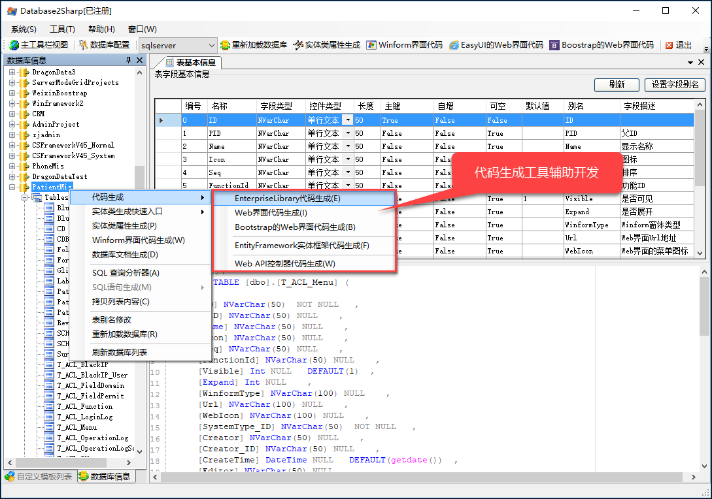
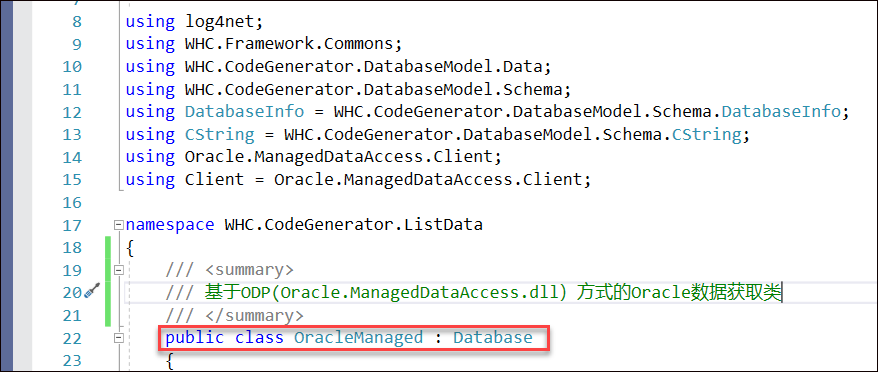
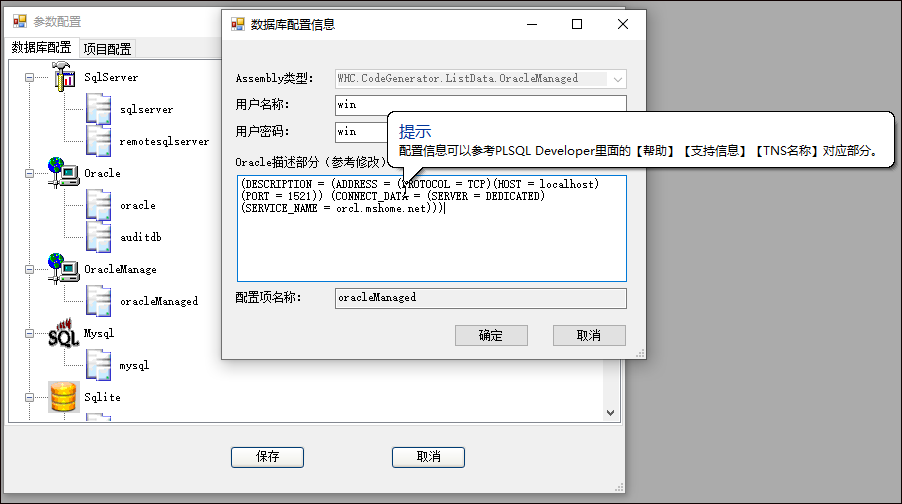
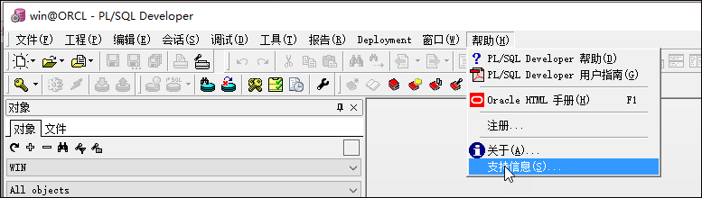
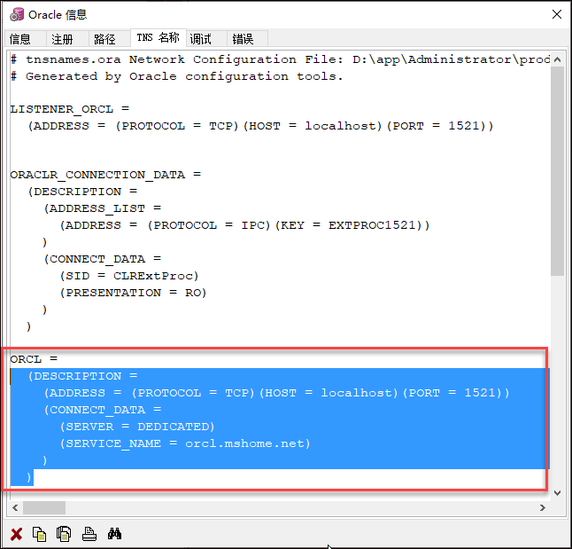
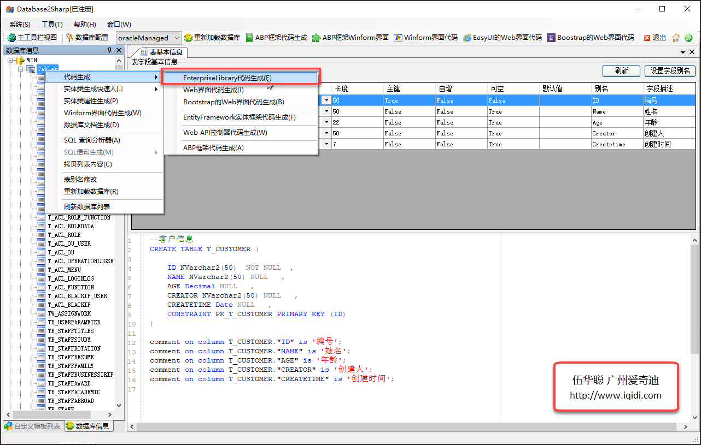

由于我们开发的辅助工具Database2Sharp需要支持多种数据库，虽然我们一般使用SQLServer来开发应用较多，但是Oracle等其他数据库也是常用的数据库之一，因此也是支持使用Oracle等数据库进行代码的快速生成。在此之前我一直要求用户使用代码生成工具的时候，如果使用Oracle开发，则需在开发环境中安装Oracle客户端，以便继续利用微软的System.Data.OracleClient方式访问Oracle，不过这样开发环境就会麻烦一些。另外还带来一个问题，使用这些驱动的时候，由于系统的限制，还会区分32位或者64位的问题，不能实现兼容性的访问。为了彻底解决这个问题，我们使用ODP.NET（Oracle.ManagedDataAccess.dll）访问Oracle数据库，实现免安装Oracle客户端，兼容32位64位Oracle驱动。
Database2Sharp是一款代码生成工具和数据库文档生成工具，该工具从2005年开始至今，一直伴随着我们的客户和粉丝们经历着过各种各样的项目开发，在实际开发中能带来效率的提高及编程的快乐。
Database2Sharp是一款主要用于C#代码生成以及数据库文档生成的工具，软件支持Oracle、SqlServer、MySql、PostgreSQL、Sqlite、Access以及国产达梦等数据库的代码生成，可以生成各种架构代码、生成Winform界面代码、Web界面代码（包括EasyUI和BootstrapWeb界面）、Entity Framework实体框架代码、导出数据库文档、浏览数据库架构、查询数据、生成Sql脚本等，还整合自定义模板和数据库信息的引擎，方便编写自定义模板调试和开发。生成的框架代码支持多种数据库一起使用，也支持不同业务的数据库切割为多个库进行使用，是一种适应性非常强、弹性很好的应用框架。
Database2Sharp推荐采用软件功能“Enterprise Library代码生成”来生成项目代码，这个架构体系生成整个项目工程框架，包含实体类、数据访问类、业务类、Web页面代码、WCF相关服务层（可选）、Web API服务层（可选），以及各种服务的调用包装层代码等。该架构利用泛型及缓存机制，良好的架构极大简化代码，强大完善的基类机制使您甚至不用编写一行代码就能顺利运行。一个简单点击几次鼠标就能完成一周代码量的代码生成工具，效率惊人、友好体贴，真正的开发好伴侣。
当然，开发的过程是一个繁复、精细的过程，因此Database2Sharp也吸收了来自我们自己的实际需求，以及很多同仁朋友的宝贵意见，一直在改进，一直努力做到更好，以求达到一个更加完美、更加易用的境界。
在我们开发软件的时候，解决方案项目基于一定的分层组织，每个项目分层中，各个类的关系也是确定的，借助辅助工具（结合模板引擎）可以快速生成我们所需要的代码，并极大提高我们软件的开发效率，Database2Sharp代码生成工具就是一款专门针对我们自己框架结构配套的开发工具。
Database2Sharp代码生成工具，主要是基于数据库提取的元数据信息，根据表的信息和关系，字段信息等内容，生成我们框架所需要分层的类代码。
对于Winform开发，可以根据Winform框架或者混合框架的窗体界面类，生成标准的界面代码，列表界面默认具有分页查询、导入导出、高级查询、编辑、删除事件绑定，编辑界面则具有获取数据并显示在控件，保存后执行更新或者写入的操作。
对于Web开发，可以根据EasyUI控件界面或者Bootstrap控件界面的不同，生成对应的视图HTML代码和控制器类代码，同时这些界面默认也具有分页查询，导入导出，显示明细和保存数据的功能。
软件主要界面如下所示。

首先通过Nugget程序包下载一个Oracle.ManagedDataAccess.dll的文件，然后进行使用即可，经过测试使用这个类库，可以无视数据库系统的位数，最重要的是减少了Oracle客户端的安装。
为了和原有的系统支持的OracleClient实现区分，以便继续保留原有方式的处理，那么我们增加一个特别的OracleManaged类实现Oracle元数据的处理即可。

应用这个Oracle.ManagedDataAccess方式，相对于OracleClient方式，我们几乎不用变化任何对象的名称，只是换了一个命名空间而已，基本实现完全兼容。
有了这个获取数据的方式，当然需要对数据配置的界面增加一个OracleManaged的对应方式了，因为Oracle.ManagedDataAccess和OracleClient的连接字符串有所差异的。
前者Oracle.ManagedDataAccess的连接字符串变为：
Data Source= (DESCRIPTION =
(ADDRESS = (PROTOCOL = TCP)(HOST = localhost)(PORT = 1521))
(CONNECT_DATA =
(SERVER = DEDICATED)
(SERVICE_NAME = orcl.mshome.net)
)
);User ID=win;Password=win依照这个配置的参数我们修改下Oracle数据库连接字符串的配置界面如下：

其中我们对于Oracle连接字符串描述部分，提示参考PLSQL Developer里面【帮助】【支持信息】 【TNS名称】的对应部分即可，如下所示。


有了这些配置信息，我们就可以不管服务端或者本地的Oracle版本是32位的还是64位的，实现全部兼容，并且如果客户端没有安装Oracle客户端，照样可以访问Oracle服务端的数据的。
运行代码生成工具，可以获得Oracle的数据表等信息，可以在Oracle环境下，无需安装Oracle客户端，顺畅使用代码生成工具进行代码的开发工作了。
